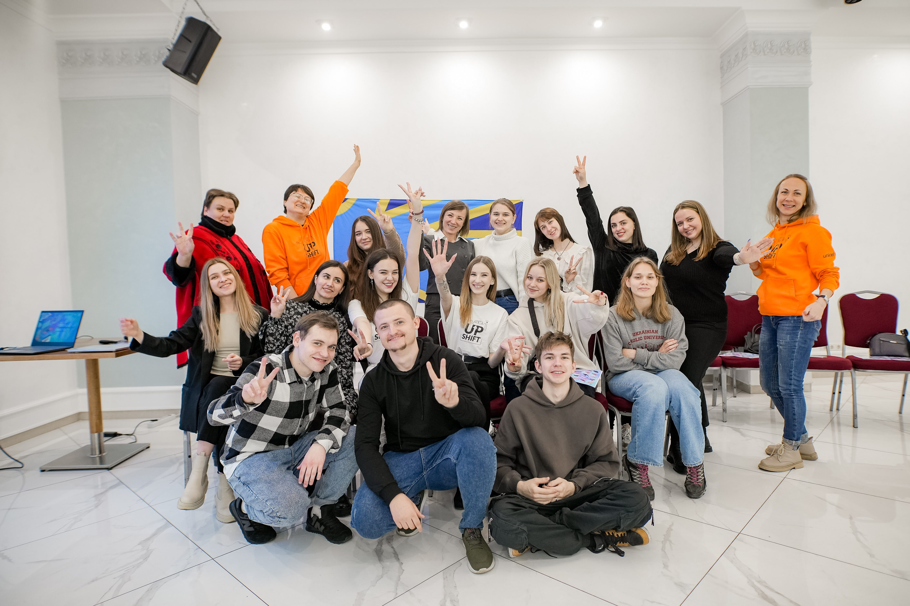
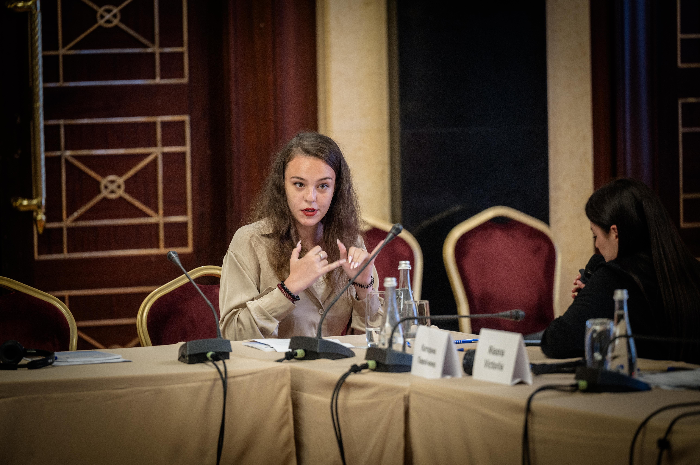
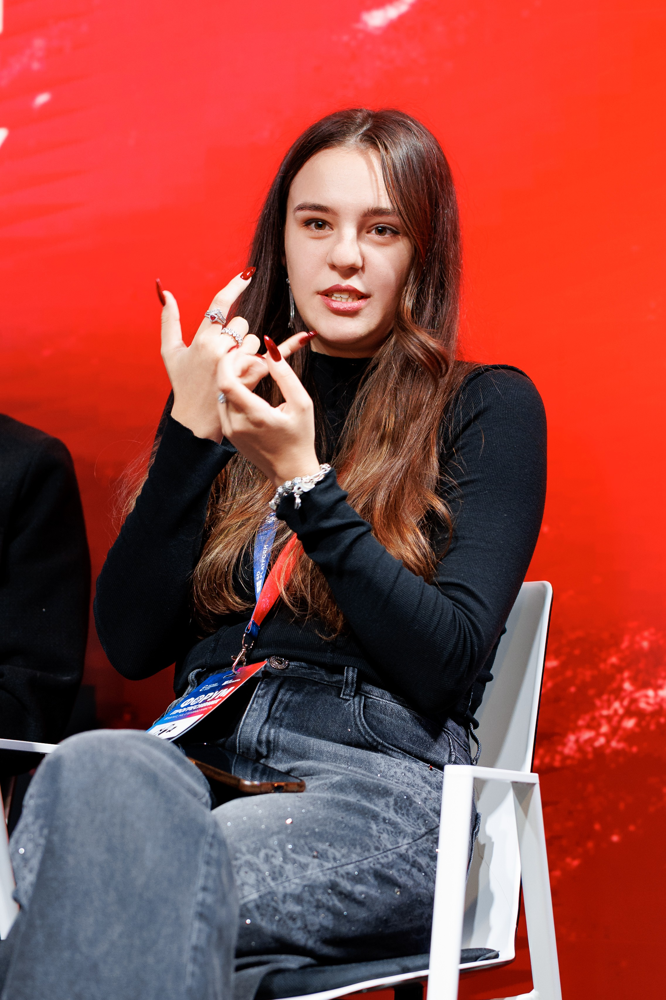

Громадська організація World of Silence - українська організація, створена для розвитку глухої спільноти, популяризації української жестової мови та посилення участі глухих у суспільному житті.
Ми працюємо над тим, щоб глухі мали рівний доступ до інформації, освіти, можливостей для розвитку та участі у процесах прийняття рішень.
Наша місія — сприяти розвитку глухої спільноти в Україні, популяризувати українську жестову мову та створювати рівні можливості для участі глухих у суспільному житті. Ми працюємо над підвищенням доступності інформації, освіти та громадської участі, а також над подоланням бар’єрів і дискримінації.


- Розвиваємо освіту та доступ до інформації. Створюємо відеолекції українською жестовою мовою, освітні матеріали доступного формату та інклюзивні медіапроєкти.
- Популяризуємо українську жестову мову. Проводимо освітні програми, курси, тренінги та інші заходи, що сприяють поширенню української жестової мови та покращенню комунікації між глухими та суспільством.
- Працюємо над безбар’єрністю. Реалізуємо ініціативи, спрямовані на покращення доступності інформації, послуг та суспільних процесів для глухих.
- Популяризуємо права людини. Проводимо правозахисні заходи, створюємо інформаційні матеріали жестовою мовою та поширюємо знання про права глухих.
- Розвиваємо інклюзивні медіа. Створюємо подкасти, відео та інші медіаматеріали жестовою мовою із субтитрами та озвученням, щоб зробити інформацію доступною для ширшої аудиторії.
Представники організації беруть активну участь у національних форумах та заходах, співпрацюють із державними установами, правозахисними ініціативами та професійними спільнотами задля розвитку безбар’єрності та рівного доступу до інформації.


Громадська організація World of Silence реалізує освітні, правозахисні та інформаційні ініціативи, спрямовані на розвиток глухої спільноти, популяризацію української жестової мови та створення безбар’єрного середовища.
Ми організовуємо освітні програми, тренінги, курси та інші заходи, спрямовані на поширення знань про права людини, громадянську участь та розвиток глухої спільноти. Також створюємо освітні матеріали українською жестовою мовою.
Організація працює над поширенням української жестової мови та розвитком доступної комунікації між глухими та суспільством. Ми проводимо курси, створюємо відеоматеріали та реалізуємо інформаційні кампанії.
Ми сприяємо підвищенню обізнаності про права глухих, створюємо доступні інформаційні матеріали жестовою мовою та підтримуємо ініціативи, спрямовані на подолання дискримінації та бар’єрів у суспільстві.
Організація створює подкасти, відео та інші медіаматеріали жестовою мовою із субтитрами та озвученням, щоб зробити важливу інформацію доступною для ширшої аудиторії.
Ми співпрацюємо з громадськими організаціями, державними установами, експертами та міжнародними партнерами для розвитку безбар’єрності, доступності інформації та участі глухих у суспільному житті.